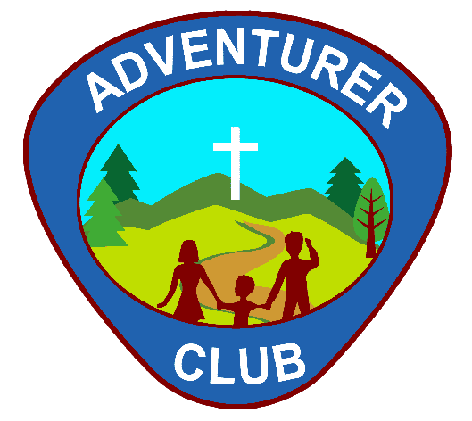

Ministries
The Seventh-day Adventist Church youth ministries.

ADVENTURERS
The volunteer leadership attend special training sessions to understand how to maximize the focus of the Adventurer Club in strengthening the parent-child bonds and enable both parents and children to understand their relationship to God.

PATHFINDERS
Enlarging their windows to the world and building a relationship with God are the dual objectives of this club designed for children ages 10-15.
MASTER GUIDES
The story of the Adventist Youth Society began over 125 years ago along a dusty country lane in Michigan with two young boys kneeling in prayer and today serves ages 21-30.